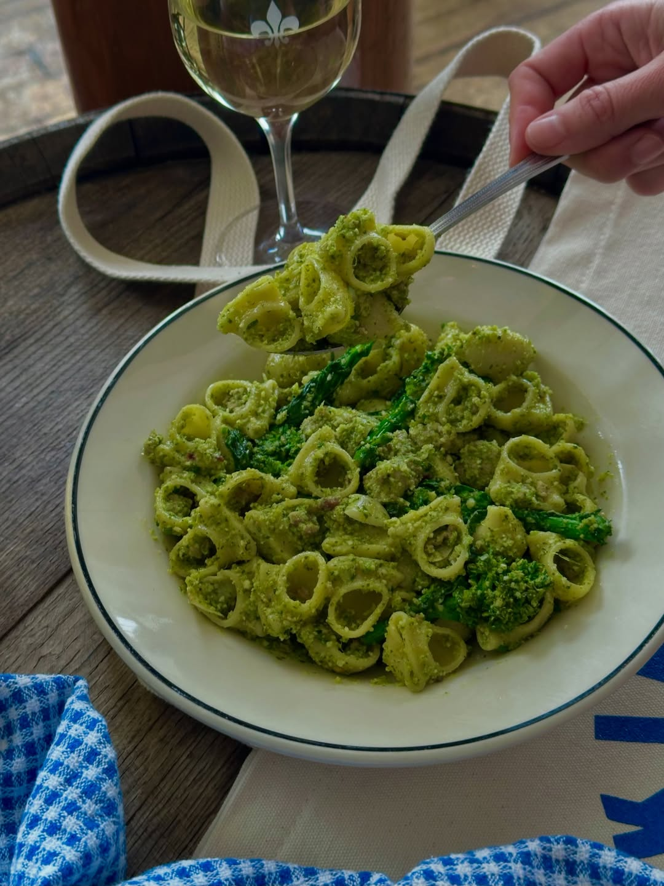

About
Pesto comes from Genova
in the Liguria region of Italy.
The name comes from the Italian word for crushing or pounding, because it was first made with a mortar and pestle.
in the Liguria region of Italy.
The name comes from the Italian word for crushing or pounding, because it was first made with a mortar and pestle.
This version uses a food processor.
It keeps well in the fridge for a few days.
Ingredients
For the pesto
2 cups fresh basil leaves, packed
1/3 cup pine nuts
2 garlic cloves
1/2 cup grated Parmesan
1/2 cup extra virgin olive oil
Salt and black pepper, to taste
1 teaspoon lemon juice (optional)
For the pasta
1 lb spaghetti, linguine, or trofie
Salt for the pasta water
Extra Parmesan for serving
Steps
- Bring a large pot of salted water to a boil.
- Toast the pine nuts in a dry pan over medium heat for 2 to 3 minutes, until golden.
Watch them (They burn fast) - Pulse the basil, pine nuts, and garlic in a food processor until finely chopped.
- With the processor running, slowly pour in the olive oil.
- Add the Parmesan, salt, pepper, and lemon juice. Pulse to combine
- Cook the pasta until al dente. Save 1 cup of pasta water, then drain.
- Toss the pasta with the pesto.
Add pasta water a splash at a time until the sauce coats the noodles. - Serve with extra Parmesan
.
.
Notes
Walnuts or almonds work in place of pine nuts.
Store leftover pesto in a jar with a thin layer of oil on top so it stays green.
.
.
.
.
Read more about
pesto
Wikipedia